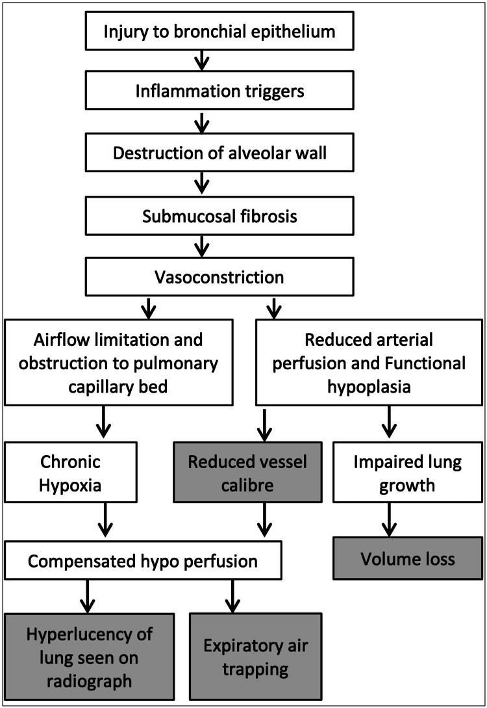
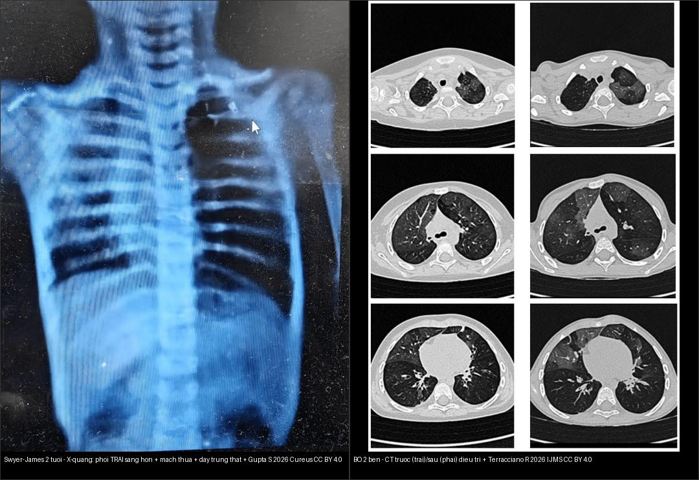
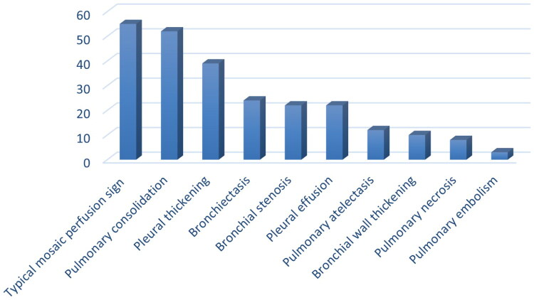
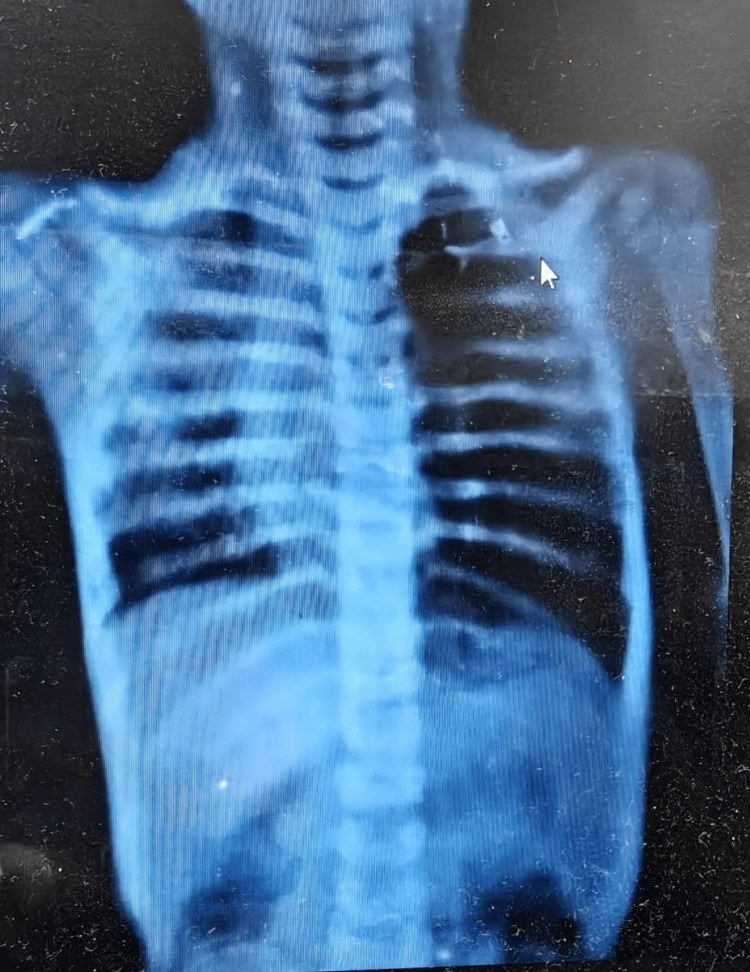
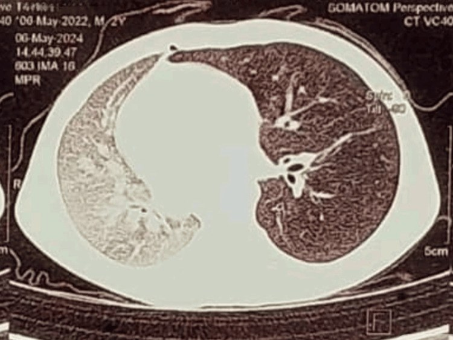
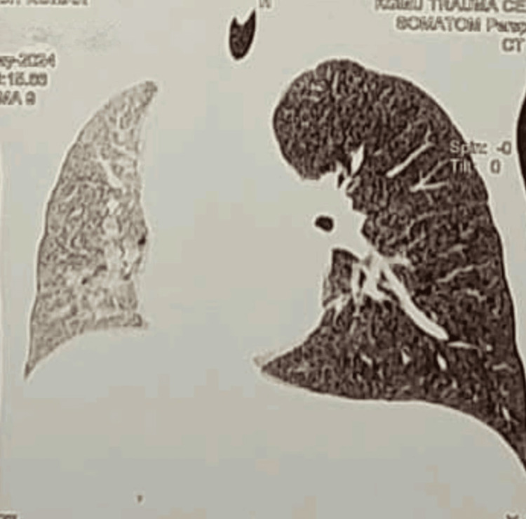
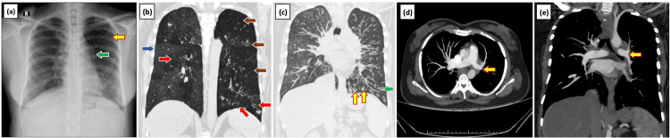
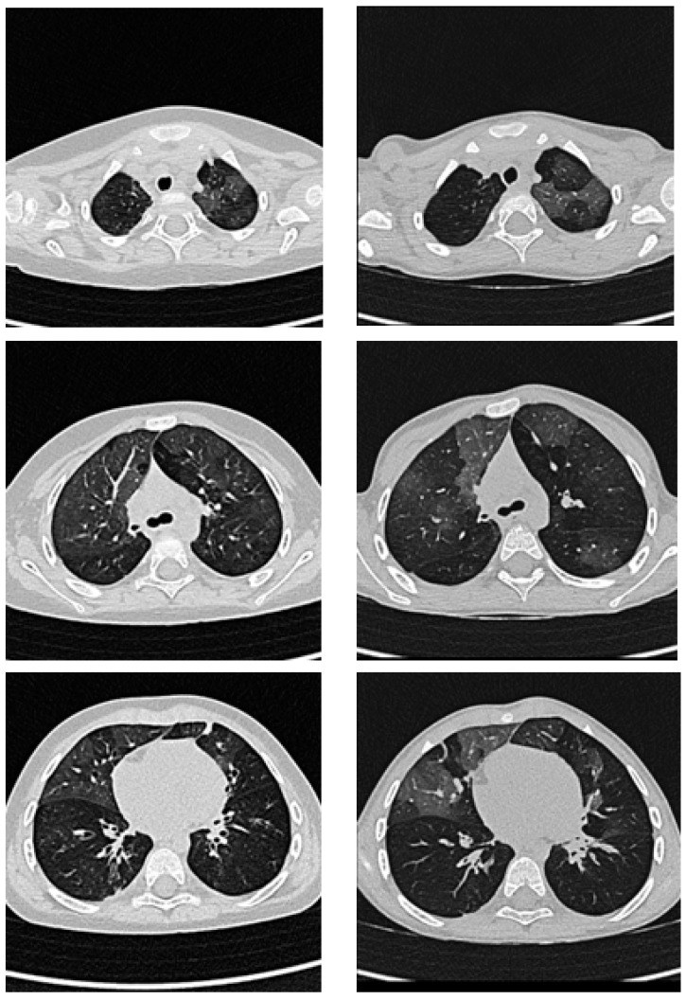

614 — Bệnh tiểu phế quản tắc nghẽn (BO) hậu nhiễm trùng & Swyer–James / Post-infectious bronchiolitis obliterans & Swyer–James–MacLeod
Tags: pattern:u-khi pattern:viem-tieu-phe-quan pattern:phoi-mot-ben-sang vung:phoi vung:phe-quan protocol:HRCT protocol:HRCT-thi-tho-ra
Mức chắc chắn (certainty): tổng hợp y văn (literature synthesis) — nhóm tự biên từ các bài tổng quan + case report CC BY 4.0 (Europe PMC); các ca trong quiz là ca nguyên văn (verbatim case) chép đúng tuổi – bệnh cảnh – chú thích gốc.
1. Tổng quan bệnh học – cơ chế hình ảnh
Viêm tiểu phế quản tắc nghẽn (bronchiolitis obliterans, BO) là bệnh tắc nghẽn hô hấp mạn không hồi phục: một đợt tổn thương tiểu phế quản (điển hình do nhiễm trùng) → viêm → xơ hóa dưới niêm mạc (submucosal fibrosis) → hẹp/bít một phần hoặc hoàn toàn lòng tiểu phế quản, kèm kém đáp ứng với thuốc giãn phế quản (Wan L, Wang Z — Can Respir J 2025, PMC12259327). Ở trẻ em, thể hay gặp nhất là BO hậu nhiễm trùng (post-infectious BO, PIBO); Swyer–James–MacLeod (SJMS) là thể một bên của PIBO (Gupta S et al. — Cureus 2026, PMC12988829). Khác nhóm BO sau ghép (BOS — bronchiolitis obliterans syndrome sau ghép phổi/tế bào gốc) — cùng cơ chế xơ nhưng khác bối cảnh.
- Tác nhân (mầm bệnh): adenovirus là nguyên nhân hàng đầu, các type 3, 7, 11, 21 chiếm 20–69% ca PIBO; kế đến Mycoplasma pneumoniae (trẻ lớn hơn, đang tăng ở châu Á); còn RSV, sởi (measles), cúm, á cúm, HSV, Bordetella pertussis, lao, Chlamydophila, Legionella, SARS-CoV-2 (Wan L, Wang Z 2025).
- TẠI SAO thấy "mosaic giảm tỷ trọng" (mosaic perfusion/attenuation) trên HRCT: tiểu phế quản bị xơ/bít không đều giữa các tiểu thùy. Vùng phía sau tiểu phế quản bít bị giữ khí lúc thở ra (van một chiều) → co mạch phản xạ do thiếu oxy cục bộ (hypoxic vasoconstriction) → vùng đó nhận ít máu hơn → trên CT giảm đậm độ (tối hơn); xen kẽ là tiểu thùy còn thông khí bình thường (sáng hơn). → mosaic perfusion là dấu hiệu CT mạnh nhất gợi PIBO ở trẻ có bệnh cảnh điển hình (Wan L, Wang Z 2025). Vì bản chất là giữ khí thì THỞ RA, chụp thì thở ra nhìn rõ hơn thì hít vào.
- TẠI SAO Swyer–James có "phổi một bên sáng hơn": đợt nhiễm trùng nặng một bên → xơ + tắc tiểu phế quản lan rộng + co mạch kéo dài → giảm phát triển mạch phổi (hypoplasia mạch máu) + giữ khí. Kết quả: tăng độ sáng (hyperlucency) + mạch máu thưa + rốn phổi nhỏ + giảm thể tích nhẹ, có khi đẩy trung thất sang bên lành do căng giãn quá mức. Sơ đồ cơ chế: tổn thương biểu mô → viêm → phá vách phế nang → xơ dưới niêm mạc → co mạch → hạn chế luồng khí + giảm tưới máu mao mạch → mất thể tích + phổi sáng + ứ khí thì thở ra (Kumar K et al. — Cureus 2024, PMC11271755).
- Vì sao KHÔNG dùng MRI: tổn thương là bệnh học đường thở nhỏ (không phải khối/mỡ/máu), không có tín hiệu T1/T2 đặc thù đủ để chốt; HRCT (đặc biệt thì thở ra) là phương tiện chẩn đoán hình ảnh chính (Wan L, Wang Z 2025). CT đậm độ chỉ phản ánh tỷ lệ khí/máu nên mosaic giảm đậm độ = giảm tưới máu, không phải "mờ" thật.
Ngưỡng định lượng cần nhớ:
- Tiêu chuẩn chẩn đoán PIBO (đồng thuận Trung Quốc 2023, dẫn trong Wan L, Wang Z 2025): (1) tiền sử nhiễm trùng hô hấp dưới nặng; (2) khò khè/ran ẩm ≥ 6 tuần, đáp ứng kém giãn phế quản; (3) FEV₁/FVC < 80% hoặc FEV₁ < 80% dự đoán, test giãn phế quản đa số âm tính; (4) HRCT mosaic + ứ khí ± dày/giãn phế quản; (5) loại trừ hen, dị dạng phổi bẩm sinh, lao, viêm tiểu phế quản lan tỏa, xơ nang.
- Chẩn đoán thường muộn: từ khởi phát đến lúc chẩn đoán 15,4–87,6 tháng (Wan L, Wang Z 2025) → càng trẻ càng dễ bị bỏ sót.
- Yếu tố nguy cơ trên một đợt viêm phổi cộng đồng (Hou J et al. — Ann Med 2025, PMC12576899): tuổi < 83 tháng** (Se 79,52%/Sp 56,63%) và **nằm viện > 10 ngày (Se 55,56%/Sp 90,36%); kèm khó thở, đông đặc phổi, viêm nội phế quản (AUC riêng 0,70–0,764). Trong nhóm quan sát sau chẩn đoán: giãn phế quản 24 ca, hẹp phế quản 22 ca, hoại tử phổi 8 ca, dày màng phổi 39 ca, dày thành phế quản 10 ca.
- Thang dự đoán Colom–Teper ≥ 7 điểm = nguy cơ PIBO (3 biến: bệnh cảnh điển hình, phơi nhiễm adenovirus, mosaic trên HRCT) (Wan L, Wang Z 2025).
- Tiên lượng: 65–80% cải thiện triệu chứng trong 1 năm; một nghiên cứu 114 trẻ theo dõi 6–110 tháng (trung vị 24 tháng) có 82,5% cải thiện lâm sàng, một số cải thiện giãn phế quản/xẹp/ứ khí (nhờ phổi còn phát triển).

Sơ đồ sinh bệnh học Swyer–James: tổn thương biểu mô phế quản → viêm → phá vách phế nang → xơ dưới niêm mạc → co mạch → giới hạn luồng khí + giảm tưới máu mao mạch → phổi sáng trên phim + ứ khí thì thở ra + mất thể tích. Nguồn: Kumar K et al., Cureus 2024 (PMC11271755), CC BY 4.0. Giữ nguyên bản.2. Mẫu hình + chẩn đoán phân biệt theo vị trí (gamut)
Mẫu hình mở đầu = "mosaic giảm tỷ trọng ± ứ khí thì thở ra". Gamut theo phân bố:
- Hai bên, lan tỏa (PIBO/BO điển hình): mosaic giảm tỷ trọng + ứ khí thì thở ra ± dày thành phế quản, giãn phế quản, xẹp phân thùy. Nền: sau adenovirus/Mycoplasma nặng; sau ghép phổi/tế bào gốc, GVHD mạn, viêm khớp dạng thấp, sau hít sặc/hơi độc.
- Một bên (Swyer–James–MacLeod): phổi một bên sáng hơn + mạch máu thưa + rốn phổi nhỏ + ứ khí (rõ khi thở ra) + giảm thể tích nhẹ, đôi khi đẩy trung thất sang bên lành. Nền: đợt nhiễm trùng nặng một bên thời nhỏ → di chứng muộn.
- Trung tâm tiểu thùy/nội phổi (cellular bronchiolitis — KHÁC): nốt trung tâm tiểu thùy mờ / tree-in-bud (nhiễm trùng, hít sặc) — đây là viêm tiểu phế quản tế bào, không phải BO xơ/tắc nghẽn (nối bài 613, 011).
Gamut "PHỔI MỘT BÊN SÁNG HƠN" ở trẻ — gợi nhớ 6 nhóm: Khí phế thũng thùy bẩm sinh (CLE), Swyer–James, Dị vật đường thở (van một chiều — cấp tính!), Bất sản phế quản (bronchial atresia — mucocele + ứ khí), Phổi/tim bẩm sinh (thiểu sản mạch phổi, hội chứng Poland), Tràn khí màng phổi. Chốt bằng bệnh cảnh cấp hay mạn, tiền sử nhiễm trùng nặng một bên, và thì thở ra.

Trái: Swyer–James ở bé 2 tuổi — X-quang: phổi TRÁI sáng hơn + mạch thưa + đẩy trung thất. Phải: BO hai bên — CT trước (cột trái) / sau (cột phải) 24 tháng điều trị, tổn thương mosaic cải thiện một phần. Nguồn: Gupta S et al., Cureus 2026 (PMC12988829) + Terracciano R et al., Int J Mol Sci 2026 (PMC12940845), CC BY 4.0. Ảnh ghép letterbox, giữ tỉ lệ.3. Bảng so sánh phân biệt (ma trận đối chiếu)
| Thực thể (entity) | Hình ảnh điển hình | Chốt vào (rule-in) | Chốt loại (rule-out) | Gợi ý xác nhận |
|---|---|---|---|---|
| PIBO/BO hai bên | Mosaic giảm tỷ trọng hai bên + ứ khí thì THỞ RA ± dày thành/giãn phế quản, xẹp phân thùy | Mosaic + ứ khí thở ra + tiền sử nhiễm trùng nặng (adenovirus/Mycoplasma) + tắc nghẽn cố định > 6 tuần | Mosaic mà hết khi thở ra (đổi đều thì) → nghĩ nguyên nhân mạch máu, không phải BO | HRCT thì thở ra + PFT (tắc nghẽn, đáp ứng giãn phế quản âm) |
| Swyer–James–MacLeod | Một bên: sáng hơn + mạch thưa + rốn phổi nhỏ + ứ khí + giảm thể tích, ± đẩy trung thất | Một bên + tiền sử viêm hô hấp nặng thời nhỏ + ứ khí thở ra + rốn phổi nhỏ | Hai bên đối xứng → PIBO; cấp tính + dị vật → dị vật | X-quang + HRCT thở ra + xạ hình thông khí/tưới máu (V/Q) |
| Khí phế thũng thùy bẩm sinh (CLE) | Một thùy căng khí quá mức đè xẹp phổi lành, mạch máu thưa nhưng mạch TRONG thùy vẫn còn, thường thùy trên trái | Sơ sinh/nhũ nhi + một thùy căng + đè thùy lành | Tiền sử nhiễm trùng nặng một bên + ứ khí lan cả phổi → Swyer–James | CT; thường phải mổ; phân biệt với bất sản phế quản |
| Dị vật đường thở | Một bên tăng sáng + ứ khí (van một chiều), thường phổi phải (phế quản phải dốc hơn), có khi xẹp/lệch trung thất | Đột ngột (cấp) + hội chứng xâm nhập + trẻ 6 tháng–3 tuổi | Tiến triển mạn nhiều năm + tiền sử nhiễm trùng → Swyer–James, KHÔNG nội soi mù | Soi phế quản (chẩn đoán + lấy dị vật); CT nếu nghi |
| Bất sản phế quản (bronchial atresia) | Mucocele (nốt/tổn thương hình nhánh) + phổi quanh ứ khí, thường thùy trên trái | Mucocele + ứ khí quanh, không tiền sử nhiễm trùng | Mạch máu thưa lan tỏa toàn bên → Swyer–James | CT; thường tình cờ, không mổ |
| Hen phế quản (asthma) | Phổi thường bình thường hoặc tăng ứ khí nhẹ, không mosaic khu trú | Dao động theo đợt + đáp ứng giãn phế quản DƯƠNG rõ | Đáp ứng giãn phế quản âm tính + mosaic + triệu chứng liên tục → BO | PFT + test giãn phế quản; thử điều trị |
4. Protocol chụp + hệ phân độ/điểm chuẩn hóa
- HRCT ngực là phương tiện chẩn đoán hình ảnh chính: cắt mỏng (< 1–1,5 mm), tái tạo đa mặt phẳng, hai thì HÍT VÀO + THỞ RA (thì thở ra nhạy hơn để lộ ứ khí); không cần thuốc cản quang cho mục đích phát hiện tổn thương đường thở nhỏ. Ở trẻ nhỏ ưu tiên ALARA: hạn chế số lần CT, cân nhắc chụp thưa lát (sparse sampling) và khi trẻ không hợp tác được thì giảm độ nhạy phải ghi nhận.
- PFT (từ 4–6 tuổi): tắc nghẽn (FEV₁/FVC < 80%) hoặc hỗn hợp, đáp ứng giãn phế quản phần lớn âm tính; LCI (lung clearance index) bằng test rửa khí nhiều lần (MBW) là công cụ bổ trợ nhạy cho trẻ nhỏ/nhũ nhi; FOT/IOS khả thi ở tuổi mẫu giáo vì không cần động tác thở phức tạp (Wan L, Wang Z 2025).
- Không cần sinh thiết phổi thường quy: sinh thiết là "tiêu chuẩn vàng" nhưng xâm lấn, lấy mẫu có thể bình thường/không chẩn đoán tới ~1/3 ca trẻ do tổn thương không đều (Wan L, Wang Z 2025).
- Chẩn đoán là tổng hợp: bệnh cảnh + tiêu chuẩn Trung Quốc 2023 (mục 1) + thang Colom–Teper ≥ 7 (dẫn trong Wan L, Wang Z 2025).
- Theo dõi: HRCT + PFT mỗi 3–6 tháng, giãn dần ra 6–12 tháng khi bệnh ổn định (guideline BO Trung Quốc); một số guideline khác cắt giảm số lần CT để bảo vệ trẻ (Wan L, Wang Z 2025).
- Điều trị (không có thuốc đặc hiệu — "sequel cần hỗ trợ"): corticoid hít ± montelukast ± azithromycin liều thấp; corticoid toàn thân ở ca nặng/sớm; azithromycin 5 mg/kg/ngày × 3 ngày/tuần, tới 6 tháng (guideline Trung Quốc 2023), chỉ định khi bạch cầu trung tính dịch rửa phế quản > 0,15; giãn phế quản khí dung khi cấp/khởi phát (Wan L, Wang Z 2025).
flowchart TD
A["Trẻ khò khè/ho kéo dài > 6 tuần<br/>sau một đợt viêm hô hấp nặng"] --> B{"Tiền sử adenovirus/Mycoplasma?<br/>đáp ứng kém giãn phế quản?"}
B -->|Không| Z["Nghĩ hen/dị ứng, dị vật, lao, xơ nang…"]
B -->|Có| C["HRCT: cắt mỏng, hít vào + THỞ RA"]
C --> D{"Mosaic giảm tỷ trọng?<br/>ứ khí rõ khi THỞ RA?"}
D -->|Không| Z
D -->|Có| E{"Phân bố?"}
E -->|Hai bên lan tỏa| F["PIBO/BO — PFT: tắc nghẽn cố định<br/>Colom–Teper ≥ 7"]
E -->|Một bên, mạch thưa, rốn nhỏ| G["Swyer–James–MacLeod<br/>loại trừ dị vật (cấp)"]
F --> H["Điều trị hỗ trợ: corticoid hít ± montelukast ± azithromycin<br/>theo dõi HRCT+PFT 3–6 tháng"]
G --> H
F --> I{"Nặng/sớm?"}
I -->|Có| J["Corticoid toàn thân ngắn hạn"]
I -->|Không| H

Biểu đồ tần suất dấu hiệu CT sau chẩn đoán BO ở trẻ: mosaic perfusion đứng đầu, kế đến đông đặc, dày màng phổi, giãn phế quản/hẹp phế quản… Nguồn: Hou J et al., Ann Med 2025 (PMC12576899), CC BY 4.0. Giữ nguyên bản.5. Biến thể bình thường và cạm bẫy
- Mosaic KHÔNG phải lúc nào cũng là BO: mosaic do mạch máu (tăng áp phổi, thuyên tắc mạn) cũng tạo vùng giảm đậm độ, nhưng không đổi/không rõ thêm khi thở ra (khí không bị giữ). Chốt: ứ khí thì THỞ RA = đường thở nhỏ; không đổi thì = mạch máu.
- Cạm bẫy "phổi sáng một bên do kỹ thuật": tư thế người bệnh hơi nghiêng, che chắn, hoặc thở ra không đều có thể làm một bên sáng hơn giả tạo — đối chiếu phim thẳng với phim chụp bổ sung, đọc phim trong tư thế chuẩn trước khi gọi Swyer–James.
- Cạm bẫy dị vật: trẻ ứ khí một bên ĐỘT NGỘT không phải Swyer–James — cấp tính + "hội chứng xâm nhập" → nội soi phế quản, không được chẩn đoán "Swyer–James" rồi bỏ qua dị vật.
- Trẻ nhỏ không hợp tác thở ra → mất thì thở ra → giảm độ nhạy, dễ đọc "âm tính giả"; ghi nhận hạn chế này khi kết luận.
- Không lạm dụng số lần CT: cân bằng giá trị theo dõi và ALARA (liều trẻ em) — ưu tiên PFT/LCI khi có thể.
- Satisfaction of search: khi đã thấy mosaic ấn tượng, vẫn phải tìm giãn phế quản, xẹp phân thùy, dày thành phế quản và hạch/khối kèm theo.
6. Tự lượng giá — Blind Quiz
Ca 1 — Bé trai 2 tuổi, viêm hô hấp dưới tái diễn nhiều đợt. X-quang ngực thẳng dưới đây — mô tả trước khi mở đáp án.

- Gợi ý lâm sàng (clinical context): nhũ nhi, khò khè/viêm hô hấp tái diễn, không đáp ứng tốt điều trị thường quy.
- Câu hỏi: Hai phổi khác nhau ở điểm nào? Rốn phổi? Đưa 3 chẩn đoán phân biệt — dấu hiệu nào chốt?
Bấm để hiện đáp án (findings + chẩn đoán)
- Dấu hiệu (findings): phổi TRÁI sáng hơn rõ (hyperlucent) + mạch máu phổi trái thưa so với phổi phải; phổi phải hơi mờ (kính mờ rải rác). Đây là phổi một bên sáng + giảm mạch máu.
- Chẩn đoán (diagnosis): Swyer–James–MacLeod (di chứng BO hậu nhiễm trùng một bên) — vì đợt nhiễm trùng nặng một bên gây xơ/tắc tiểu phế quản → co mạch + giảm phát triển mạch phổi → phổi sáng + mạch thưa (cơ chế mục 1).
- Đối chiếu CT cùng bé:

- Trên CT: phổi trái căng giãn quá mức + đẩy/nhường chỗ trung thất sang phải — phù hợp thể tích phổi trái "một bên" khác thường; ca gốc không kèm giãn phế quản → thể sớm (Gupta S et al. 2026).

- Phân biệt (DDx): khí phế thũng thùy bẩm sinh (chỉ một thùy, sơ sinh), dị vật (cấp, "hội chứng xâm nhập"), bất sản phế quản (mucocele).
- Nguồn ảnh: Gupta S, Gupta H, Singh S., Cureus 2026 (PMC12988829), CC BY 4.0.
Ca 2 — Nữ 39 tuổi, tiền sử viêm hô hấp tái diễn thời nhỏ, khó thở khi gắng sức. Xem bộ ảnh X-quang + CT:

- Câu hỏi: Rốn phổi hai bên khác nhau không? Có giãn phế quản không? Giải thích tại sao phổi sáng hơn.
Bấm để hiện đáp án (findings + chẩn đoán)
- Dấu hiệu (findings): (a) X-quang — phổi trái sáng hơn + rốn phổi trái NHỎ + mạch máu thưa; (b)(c) CT vành — giảm thể tích + ứ khí phổi trái; (d)(e) CT trục + MIP — động mạch phổi trái nhỏ, mạch thưa.
- Chẩn đoán (diagnosis): Swyer–James–MacLeod syndrome — bộ ba: ứ khí + giảm tưới máu (mạch thưa) + tăng sáng một bên; nguyên nhân là di chứng viêm tiểu phế quản tắc nghẽn sau nhiễm trùng thời nhỏ.
- Chốt (clincher): một bên sáng + rốn phổi nhỏ/mạch thưa + tiền sử nhiễm trùng nặng thời nhỏ → khác CLE (một thùy, sơ sinh) và dị vật (cấp).
- Nguồn ảnh: Kumar K et al., Cureus 2024 (PMC11271755), CC BY 4.0.
Ca 3 — Bé có BO hậu nhiễm trùng, chụp CT lúc chẩn đoán và sau 24 tháng điều trị hỗ trợ:

- Câu hỏi: Tổn thương ở 3 mức giải phẫu có thay đổi không? Điều này nói gì về tiên lượng?
Bấm để hiện đáp án (findings + chẩn đoán)
- Dấu hiệu (findings): cột trái = CT lúc chẩn đoán (mosaic/ứ khí + tổn thương quanh phế quản); cột phải = cùng mức giải phẫu sau 24 tháng — cải thiện một phần (không hết hoàn toàn).
- Chẩn đoán (diagnosis): BO hậu nhiễm trùng ở trẻ — tổn thương xơ/tắc nghẽn cố định nhưng có thể cải thiện một phần theo thời gian nhờ phổi còn phát triển; phù hợp dữ liệu 65–80% cải thiện triệu chứng trong 1 năm và 82,5% cải thiện lâm sàng (Wan L, Wang Z 2025).
- Phản biện (critique): cải thiện hình ảnh không đồng nghĩa khỏi bệnh — vẫn cần theo dõi HRCT + PFT định kỳ và kiểm soát đợt cấp.
- Nguồn ảnh: Terracciano R et al., Int J Mol Sci 2026 (PMC12940845), CC BY 4.0.
Ca 4 — Ca nữ 53 tuổi, sốt + ho có đờm, X-quang phổi trái sáng hơn kèm giảm thể tích. Dùng ảnh ghép đối chiếu để chốt hướng.
- Câu hỏi: Nhìn 2 khung — "hai bên" vs "một bên" gợi ý gì? Vì sao phải phân biệt cấp hay mạn?
Bấm để hiện đáp án (findings + chẩn đoán)
- Dấu hiệu (findings): khung trái = một bên sáng + mạch thưa (mẫu Swyer–James); khung phải = mosaic hai bên, trước–sau điều trị (mẫu BO/PIBO).
- Chẩn đoán (diagnosis): phổi một bên sáng mạn + tiền sử nhiễm trùng → Swyer–James; mosaic hai bên + ứ khí thở ra → PIBO/BO.
- Chốt (clincher): thời gian là chìa khóa — cấp tính (ứ khí một bên đột ngột) → nghĩ dị vật (nội soi!); mạn + tiền sử nhiễm trùng nặng thời nhỏ → di chứng BO/Swyer–James.
- Nguồn ảnh: ghép từ Gupta S et al., Cureus 2026 (PMC12988829) + Terracciano R et al., Int J Mol Sci 2026 (PMC12940845), CC BY 4.0.
Bài liên quan chéo
- 613 – Viêm tiểu phế quản ở nhũ nhi (RSV) (chặng cấp — BO là chặng mạn)
- 610 – Suy hô hấp sơ sinh & dị dạng phổi bẩm sinh (CLE, CPAM — DDx phổi một bên sáng)
- 616 – Biến chứng viêm phổi nhi: empyema & hoại tử phổi (biến chứng đợt cấp)
- 615 – Viêm phổi nhi: round pneumonia, virus vs vi khuẩn & hít sặc dầu hỏa
- 050 – Giãn phế quản & kén khí (giãn phế quản — di chứng muộn)
- 600 – Tổng quan Hệ Nhi khoa
Ảnh
- Tất cả ảnh CC BY 4.0, tải về + attribution từng ảnh trong
images/CREDITS.md. Tên file614_slug_Modality_Source.jpg. - Không tải được (Radiopaedia — dẫn link) ghi trong
sources.md.
Không dùng để chẩn đoán độc lập khi chưa có người hướng dẫn.